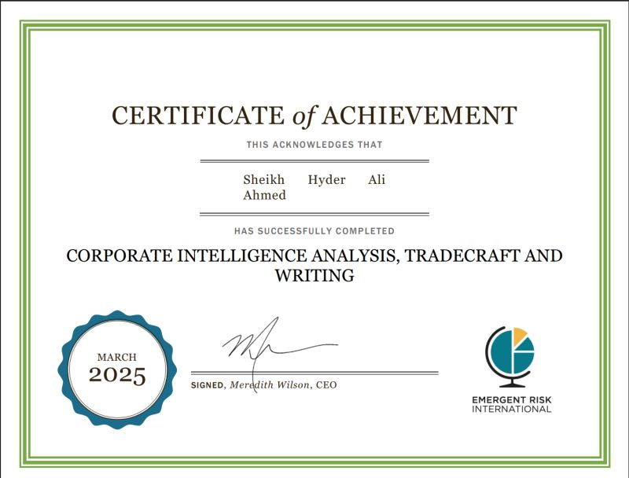
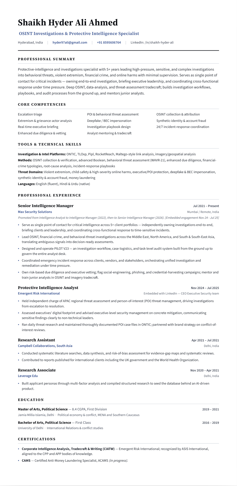

Every threat leaves a trail. I follow it.
Senior Intelligence Manager and investigator. I run OSINT, financial-crime and behavioral-threat investigations that protect executives, brands and capital — across the Middle East, North America and South & South-East Asia.
Most security is reactive. Mine starts before the first signal.
I'm a Senior Intelligence Manager with 5+ years protecting executive leadership, brands and capital through proactive, anticipatory threat detection and intelligence-driven investigations.
I design the investigation workflows my team runs, and I'm the single point of contact who briefs the client and owns the intelligence for their account — a role I've held across 5+ client portfolios spanning corporate security, financial crime, OSINT and behavioral threat assessment.
My coverage runs across the Middle East, North America and South & South-East Asia, translating ambiguous open-source signals into decisions leadership can act on — coordinated with incident-response, GSOC and executive-escalation channels.
A full-spectrum intelligence toolkit — from raw signal to executive decision.
Executive Security Intelligence
Collecting, analysing and visualising threat data to detect, assess and respond to risk against executives, employees, assets and operations.
OSINT & Research
Data mining, link analysis, image analysis, data-breach checks, metadata analysis and deep web reconnaissance with advanced Boolean tradecraft.
Geopolitical Risk Analysis
Global events monitoring, threat assessment and client vulnerability assessment across volatile regions — including MENA and the Southern Caucasus.
Due Diligence & Vetting
Risk-based due diligence, executive vetting and reputational-risk intelligence, aligned with global best practice for firms and principals.
Reporting & Data Visualisation
Producing executive-level intelligence reports, interpreting complex data and building visualisations — increasingly accelerated with AI models.
Team & Project Leadership
Designing and running independent projects to tight deadlines, allocating resources, and training junior analysts in advanced OSINT and imagery tradecraft.
The tools I work with.
The specialist platforms I've worked with day to day — orchestrated into one investigative workflow.
specialist platforms unified into one pay-as-you-use workflow — the problem PILOT V23 was built to solve.
PILOT V23
Every investigation runs on two things — a sprawl of specialist tools, and a graveyard of Excel trackers holding the key facts of each case. PILOT V23 replaces both.
It's the operations layer for protective intelligence: decide which tool actually earns its cost, keep tight control of spend, and get a clean, reliable record that audits every task — so the insight we produce is answerable. I designed and built it single-handedly, pouring in everything I've learned on the desk.
A dozen disconnected tools and a pile of Excel trackers. No clean way to decide which tool earns its cost, control spend, or keep managers in the loop.
One workspace that seeds every tool's API, bills pay-as-you-use, and audits each task — clean management, and answerable insight.
One console, every source
15+ vendor APIs seeded into a single investigative surface — no more tab-sprawl.
Pay-as-you-use
Token-metered access — pay only for the queries you actually run, per tool.
AI & Operations Audit
Every task attributed — which analyst, which model, how many tokens, what cost. The audit is what makes each insight answerable.
Project management, built in
Retires the Excel-tracker graveyard — every case's tasks, owners and live status on one board leadership can watch.
Need this run for you?
Tell me your workflow and what you need to know — I'll scope the research and run it end-to-end, with the audit trail to back every finding.
Interactive — switch modules above · wireframes are lo-fi by intent
Five years — from the research desk to leading a protective-intelligence desk.
Senior Intelligence Manager
Protective Intelligence Analyst
Research Assistant
Research Associate
MA, Political Science
8.4 CGPAFirst Division (Upper Class). Specialised in political economy & conflict across MENA and the Southern Caucasus. Thesis on social mobility and identity politics in India.
BA, Political Science
FIRSTMajor in International Relations & conflict studies. Final-year project on internal displacement in Africa — a case study of the Democratic Republic of Congo.
Corporate Intelligence Analysis, Tradecraft & Writing
Issued by ERI and recognised by ASIS International — a senior-analyst credential aligned with the CPP and APP bodies of knowledge, covering executive protection, security management, investigations and risk assessment.

Selected investigations — redacted.
Abstracts only. Names, clients and methods are withheld by design — request the full brief and I'll walk you through what I can.
Grievance actor at a principal's location
A subject posted from outside a client's location. I established criminal history, a firearms licence and a clear grievance — confirming means, motive and intent, and escalating for protective action.
Extremist groups threatening a corporation
Assessed far-left and far-right groups issuing threats of physical violence against a corporate client — mapping capability, intent and mobilisation to inform protective posture.
Workplace-violence behavioral assessment
Applied WAVR-21 to a workplace-violence concern at a Fortune-100 manufacturer — assessing pathway-to-violence and online-to-real-world escalation to guide response.
Threatening-calls attribution
Ran attribution on a sustained campaign of threatening calls and messages against a client — establishing the source, pattern and escalation risk behind the harassment.
Launderers linked to organised crime
Enhanced due diligence on suspected money launderers surfaced ties to Russian organised crime — delivering reputational-risk intelligence that reshaped the client's decision.
Cosmos Bank cyber-heist typology
Studied the Cosmos Bank malware and ATM-switch heist (public record) — reconstructing the attack path and money-movement typology as a reference model.
PNB Letters-of-Undertaking fraud
Mapped the Letters-of-Undertaking fraud typology in the PNB / Nirav Modi case (public record) — how trade-finance controls were bypassed at scale.
DPRK remote IT-worker scheme
Documented DPRK operatives infiltrating hiring and freelance platforms with fabricated identities — a sanctions-evasion revenue channel, and the weak signals that expose it.
Deepfake & BEC executive impersonation
Investigated deepfake- and BEC-driven impersonation of executives used to authorise fraudulent transfers — the lure, the tell-tales, and the controls that stop it.
Standing reputational-chatter watch
Daily monitoring of social-media chatter around principals — surfacing how people are referring to them, and catching reputational threats as they form.
Synthetic-identity footprint scoring
Built a footprint-scoring capability to flag synthetic identities and fake accounts at onboarding — account-integrity detection with a working tool behind it.
Rapid inquiry — shooting incident
Fast open-source inquiry into a shooting incident — establishing facts, actors and client exposure under time pressure to support an immediate response decision.
Field notes from the threat landscape.
Abstracts below. Want the full piece? Reach out and I'll send it over.
The Executive Digital Footprint: Mapping Exposure Before Adversaries Do
How to inventory, score and systematically shrink a principal's online attack surface — before it becomes an incident report.
From Reactive to Anticipatory: A Predictive Threat-Capture Loop
The operating rhythm that moves a desk from chasing alerts to pre-empting them.
OSINT Tradecraft: Boolean Beyond the Basics
Query patterns that surface what generic search quietly buries.
Why I Built PILOT V23: Unifying the Analyst Toolstack
The frustrations, the architecture, and the case for pay-as-you-use intelligence.
The full record.
The complete résumé — OSINT investigations and protective intelligence. Download the PDF, or print this page to a clean copy.

“Download / Print PDF” saves this résumé as a clean PDF.
Have a threat worth getting ahead of?
Available for protective-intelligence engagements, advisory, and select analyst roles. Let's talk.